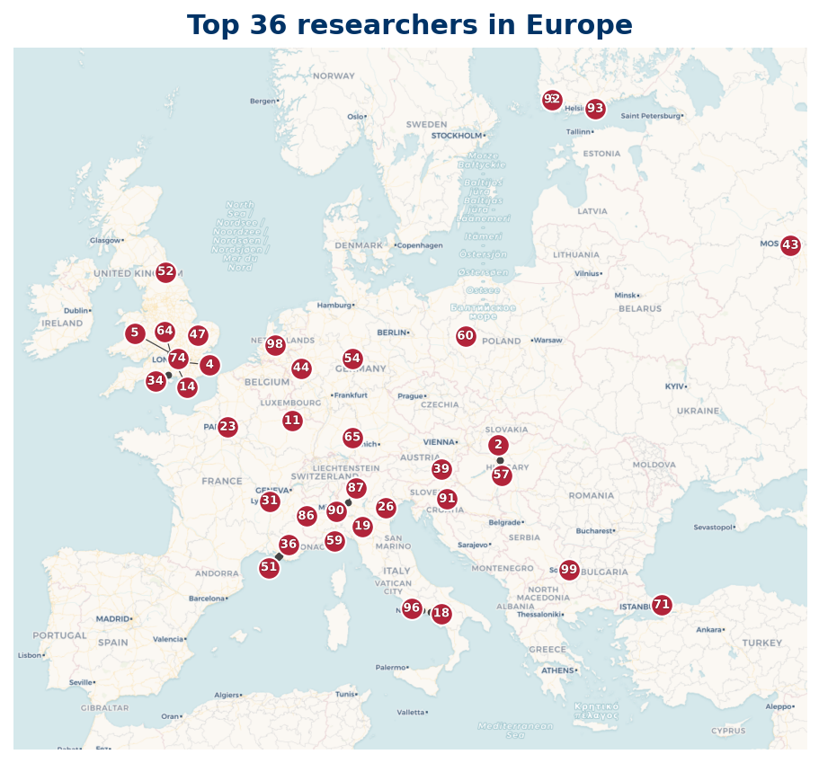

39 researchers are based in Europe; 36 researchers mapped, 3 researchers location not available (institution geocode pending).
Listing
| Rank | Name | Institution | Country |
|---|---|---|---|
| 2 | János Pintz | Alfréd Rényi Institute of Mathematics | HU |
| 4 | Harman, G. | Royal Holloway University of London | GB |
| 5 | Heath-Brown, D. R. | University of Oxford | GB |
| 6 | Kaisa Matomäki | University of Turku | FI |
| 11 | Tenenbaum, Gérald | Institut Élie Cartan de Lorraine | FR |
| 14 | James Maynard | University of Oxford | GB |
| 18 | Giovanni Coppola | University of Salerno | IT |
| 19 | A. Zaccagnini | University of Parma | IT |
| 22 | Jie Wu | Institut Elie Cartan de Lorraine, CNRS | FR |
| 23 | Fouvry, E. | Centre National de la Recherche Scientifique | FR |
| 26 | A. Languasco | University of Padua | IT |
| 31 | Nicolas, J. L. | University of Lyon | FR |
| 34 | Clifford Keeble | University of Southampton | GB |
| 36 | Ramaré, Olivier | Château Gombert | FR |
| 39 | Elsholtz, Christian | Graz University of Technology | AT |
| 43 | Sergei Konyagin | Steklov Mathematical Institute | RU |
| 44 | Christian Axler | Heinrich Heine University Düsseldorf | DE |
| 45 | Wolke, Dieter | University of Freiburg | DE |
| 47 | Joni Teräväinen | University of Cambridge | GB |
| 51 | Rivat, Joël | Aix-Marseille Université | FR |
| 52 | Alexander P. Mangerel | Durham University | GB |
| 54 | Brüdern, Jörg | University of Göttingen | DE |
| 57 | Sárközy, A. | Eötvös Loránd University | HU |
| 59 | A. Perelli | University of Genoa | IT |
| 60 | Kaczorowski, J. | Adam Mickiewicz University in Poznań | PL |
| 64 | Jori Merikoski | University of Oxford | GB |
| 65 | Maier, Helmut | Universität Ulm | DE |
| 71 | Cem Yalcin Yildirim | Boğaziçi University | TR |
| 74 | J. P. Keating | University of Oxford | GB |
| 79 | Johan Andersson | Örebro University | SE |
| 86 | Bazzanella, D. | Politecnico di Torino | IT |
| 87 | Loïc Grenié | University of Bergamo | IT |
| 90 | Giuseppe Molteni | University of Milan | IT |
| 91 | Balog, Antal | Baltazar Zaprešić University of Applied Sciences | HR |
| 92 | Yu-Chen Sun | University of Turku | FI |
| 93 | Yoichi Motohashi | Finnish Academy of Science and Letters | FI |
| 96 | Maurizio Laporta | University of Naples Federico II | IT |
| 98 | Lola Thompson | Utrecht University | NL |
| 99 | Tolev, D. I. | Sofia University "St. Kliment Ohridski" | BG |